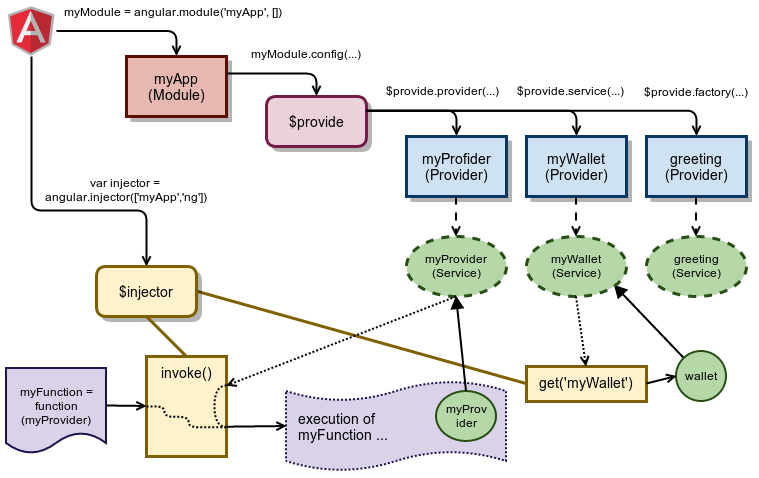

Injector
使用apply实现依赖注入
instance-Injector
return {
invoke: invoke(fn, [self], [locals]), // return none
instantiate: instantiate(Type, [locals]), // return 一个新实例
get: get(name, [caller]), // return serivce实例
annotate: annotate(fn, [strictDi]), //return Array: 依赖服务的名字
has: function(name) {
return providerCache.hasOwnProperty(name + providerSuffix) || cache.hasOwnProperty(name);
}
};
annotate
有3种方法可以annotate函数：
// 1.按名推断式注入
// inferred (only works if code not minified/obfuscated)
$injector.invoke(function(serviceA){});
// 2.$inject标记式声明注入
// annotated
function explicit(serviceA) {};
explicit.$inject = ['serviceA'];
$injector.invoke(explicit);
// 3.数组内联式注入
// inline
$injector.invoke(['serviceA', function(serviceA){}]);

instantiate
在构造函数中使用依赖注入
function instantiate(Type, locals) {
var Constructor = function() {},instance, returnedValue;
// Check if Type is annotated and use just the given function at n-1 as parameter
Constructor.prototype = (isArray(Type) ? Type[Type.length - 1] : Type).prototype;
instance = new Constructor();
returnedValue = invoke(Type, instance, locals);
return isObject(returnedValue) || isFunction(returnedValue) ? returnedValue : instance;
}
the twin injectors
$injector里面是有两个injector对象：providerInjector和instanceInjector 。前者用于config阶段，后者用于run阶段。
也可以称为services and specialized objects：
Services are objects whose API is defined by the developer writing the service.
Specialized objects conform to a specific Angular framework API. These objects are one of controllers, directives, filters or animations.
The injector needs to know how to create these objects. You tell it by registering a "recipe" for creating your object with the injector. There are five recipe types(Provider,Value, Factory, Service and Constant).
Provider
You should use the Provider recipe only when you want to expose an API for application-wide configuration that must be made before the application starts.
This is usually interesting only for reusable services whose behavior might need to vary slightly between applications.
在config阶段，可以修改provider service的配置信息
Special Purpose Objects
Earlier we mentioned that we also have special purpose objects that are different from services. These objects extend the framework as plugins and therefore must implement interfaces specified by Angular. These interfaces are Controller, Directive, Filter and Animation.
The instructions for the injector to create these special objects (with the exception of the Controller objects) use the Factory recipe behind the scenes.
Controller is instantiated via its constructor, so unlike services, controllers are not singletons
Conclusion
- The injector uses recipes to create two types of objects: services and special purpose objects
- There are five recipe types that define how to create objects: Value, Factory, Service, Provider and Constant.
- Factory and Service are the most commonly used recipes. The only difference between them is that the Service recipe works better for objects of a custom type, while the Factory can produce JavaScript primitives and functions.
- The Provider recipe is the core recipe type and all the other ones are just syntactic sugar on it.
- Provider is the most complex recipe type. You don't need it unless you are building a reusable piece of code that needs global configuration.
- All special purpose objects except for the Controller are defined via Factory recipes.
官网文档：Provider $injector 源码分析：Studying the Angular JS Injector